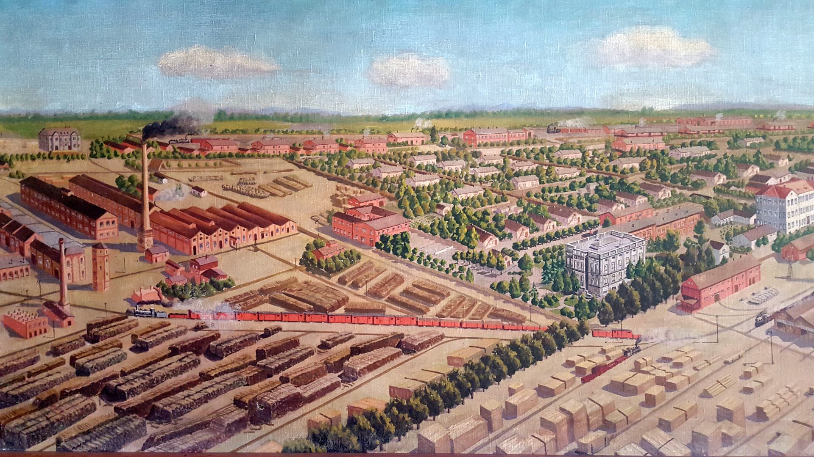
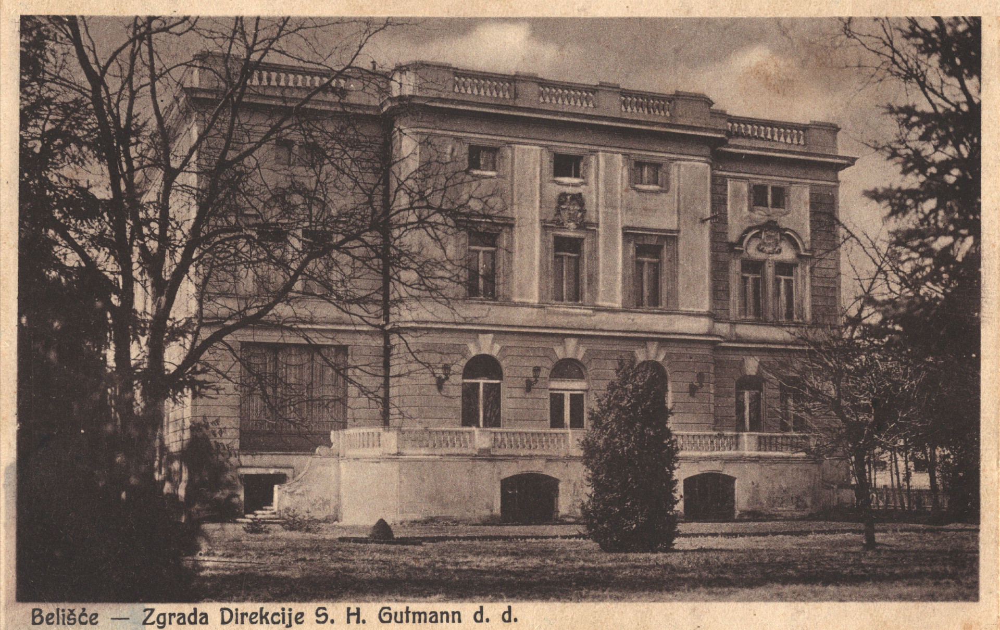
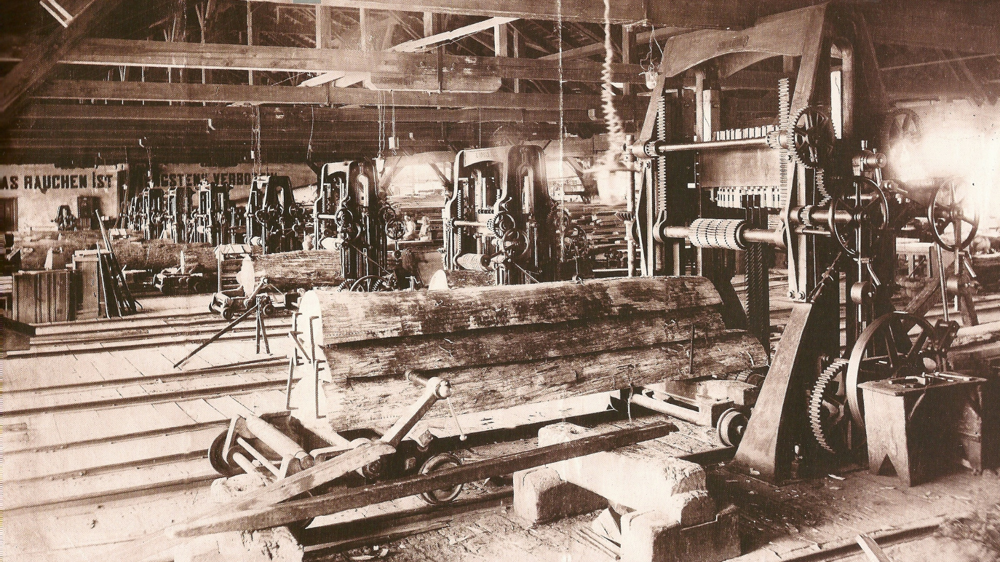

Rooms Industrial Belišće
Rooms Industrial Belišće were formed in 2022. We pride ourselves with extremelly high quality rooms and services. The interier of the building has rooms with high quality modern furniture, beds and bathrooms. The building of the Industrial itself has has a rich history behind it. Long ago the building was a storage facility used by local firefighters and after that it was used as a warehouse.

The building of Rooms Industrial Belišće is a perfect mix of old with the new.
Historical landmarks
Here are some landmarks near us.
Gutmann Palace
Gutmann Palace is the first building next to Rooms Industrial Belišće and it is the closest historical landmark to visit. The palace was built by baron Edmund Gutmann in 1905 and was named after him. The palace is also known as "Palej". This monument is one of the biggest achievements in construction at the start of 20th century. The palace is registered as a class A monument and is registered in The Register of Cultural Goods of the Republic of Croatia.

During World War 1, the palace was used as a hospital. During Croatian War of Independence, as a consequence of the attack on Belišće on January 3rd, 1992, the building was severely damaged. Also, during the same war, the basement of the palace was used as an improvised bomb shelter. Because of the severe damage done to the building during the war, palace is still in the process of reconstruction to this day, although the outside walls and basement are still preserved and are certainly worth the visit.
Museum of Belišće
Nedaleko od Soba Industrial Belišće nalazi se zgrada Muzeja, u čuvenoj i povijesnoj ulici imenom "Pekmez ulica". Godine 2015. muzej je, zajedno sa pekmez ulicom u potpunosti obnovljen, te je na taj način dobivena nova turistička znamenitost. U zgradi Muzeja izloženi su objekti industrijske baštine grada, a također mogu se pogledati i ostali povijesni sadržaji iz kulturnih, društvenih i sportskih dijelova povijesti grada. Također, u muzeju mogu se pronaći i izložbe iz prapovijesnog vremena, sve od doba dinosaura, neolitika, brončanog doba do rimskog i turskog razdoblja.
Not too far from Rooms Industrial Belišće you can find the Museum of Belišće, in a famous and historic street called "Jam Street" (hrv. Pekmez Ulica). In 2015, the museum, together with the Jam street, was completely renovated, and thus a new tourist attraction was born. The buildings of the city's industrial heritage are exhibited in the building of the museum, where you can also see other historical content from cultural, social and sports parts of the city’s history. You can also find exhibitions from prehistoric times, everything from the Dinosaur, Neolithic, Bronze Age to the Roman and Turkish periods.
Also, another popular attraction of the Museum of Belišće are wooden sculptures, which were made in the second half of the last century, and they represent the workers of Belišće from that time.
Gater memorial
In the same street of Rooms Industrial Belišće you can find the memorial Gater (so-called "Jarmača"), which is the name for the type of saw used in early 1889. The monument was one of the first and largest saw mills in the Belišće sawmill at that time.
